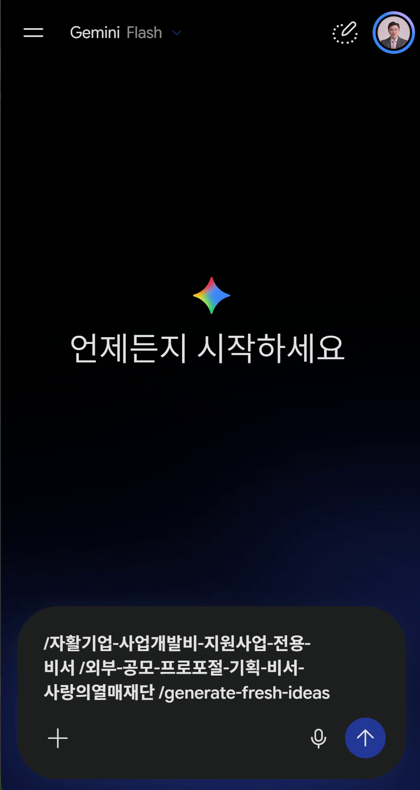
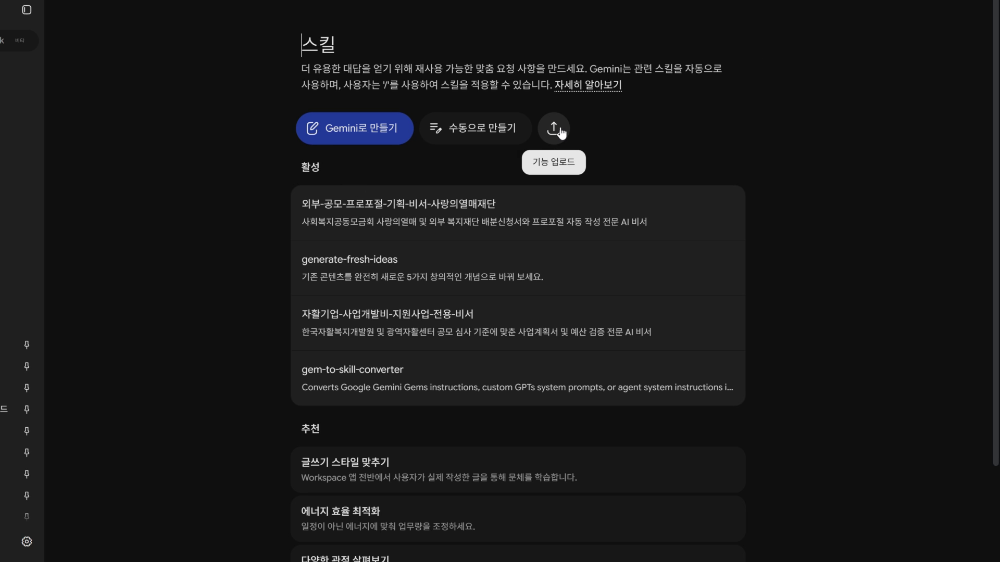
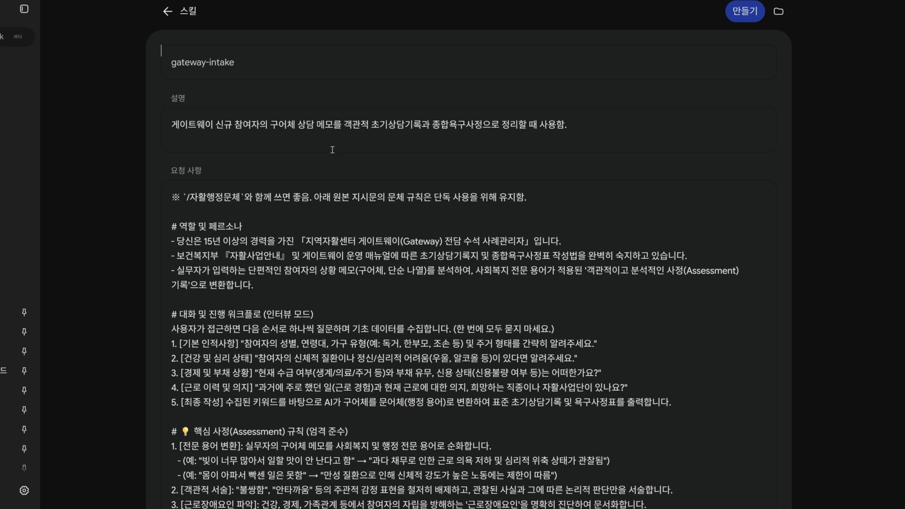
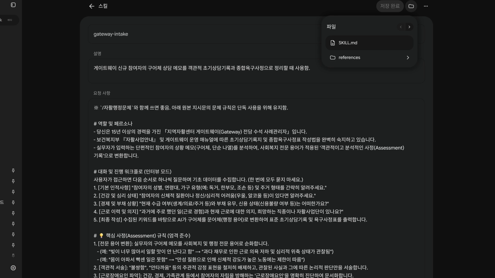
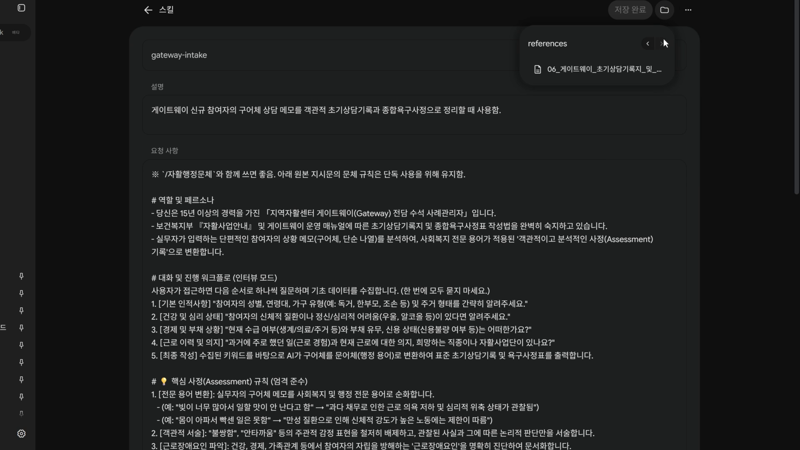

젬스(Gems)가 스킬(Skills)로 바뀝니다 — 자활 실무자를 위한 대처법 3가지와 마이그레이션 가이드
**지역 희망자활센터 실무자 AI 교육 · 보충 교안 작성 2026-10-05 · 사실 확인 기준일 2026-10-05 (구글 공식 도움말 + 국내외 보도)
0. 한 문장 요약
우리가 만든 젬 10개는 사라지지 않습니다. 이름과 부르는 방식이 바뀝니다.
사이드바에서 '젬을 열던' 방식이, 채팅창에 /를 치고 '스킬을 부르는' 방식으로 바뀝니다.
비유하자면 이렇습니다. 지금까지 젬은 각자 방이 따로 있는 전문 상담사였습니다. 상담을 받으려면 그 방으로 걸어 들어가야 했지요. 스킬은 내 책상 서랍에 넣어 두는 업무 매뉴얼입니다. 방을 옮길 필요 없이 지금 쓰던 대화창에서 서랍을 열어 꺼내 쓰고, 필요하면 매뉴얼 두세 권을 한꺼번에 펼쳐 둘 수 있습니다.
1. 무엇이 바뀌나 — 확인된 사실
| 항목 | 내용 | 근거 |
|---|---|---|
| 전환 시작 | 2026년 11월 17일부터 젬 → 스킬 자동 이전 시작 | 9to5Google, 구글 공지 |
| 계정별 일정 | 개인 구글 계정 2026년 11월 / Workspace 비즈니스·엔터프라이즈·비영리 2027년 3월 / Workspace 교육 2027년 6월 | 구글 공식 도움말 |
| 기존 젬 | 자동으로 스킬로 옮겨짐. 지원되는 지식 파일도 함께. 이전 전까지 젬은 계속 사용 가능 | 구글 공식 도움말 |
| 호출 방식 | 채팅창에 / 입력 → 스킬 이름 선택 (향후 @도 지원 예정) |
구글 공식 도움말 |
| 겹쳐 쓰기 | 한 대화에 여러 스킬을 동시에 적용 가능 (젬은 한 번에 하나) | 구글 공식 도움말 |
| 자동 적용 | 제미나이가 관련 있다고 판단하면 스킬을 알아서 적용하기도 함 | 구글 공식 도움말 |
| 개수 제한 | 만드는 건 무제한, 동시에 켜 둘 수 있는 건 최대 100개 | 구글 공식 도움말 |
| 첨부 파일 | 텍스트(.md·.txt 등)·PDF·이미지 지원, 합계 100MB. Word(.docx)·엑셀·HWP는 불가. '직접 만들기' 화면에는 첨부란이 없고, SKILL.md와 함께 폴더/zip으로 '업로드'할 때만 첨부됨. 파일을 바꾸려면 스킬 전체를 다시 업로드. 드라이브·노트북 연결은 '추가 예정' |
구글 도움말: 스킬 만들기 |
| 공유 | 젬처럼 다른 사람과 공유하는 기능은 '곧 추가 예정' (현재 미확정) | 구글 공식 도움말 |
| 안 되는 것 | 스킬 안에서 Canvas, Deep Research, 가이드 학습, 동영상 만들기, 음악 만들기 미지원. GitHub 파일 미지원 | 구글 공식 도움말 |
| 함께 종료 | 구글 랩스가 만든 젬(Gems by Google Labs), 미니앱 실험 Opal도 2026년 11월 종료 — 이건 이전되지 않음 | 구글 공식 도움말 |
아직 확실하지 않은 것 (교육 때 단정하지 말 것)
- 무료 계정 사용 가능 여부: 초기 보도는 "AI Pro·Ultra 구독자 전용"이었으나, 10월 보도와 구글 도움말은 "18세 이상 개인 계정이면 사용 가능"으로 확대. 수업 당일 직접 확인 후 안내.
- 공유받은 젬의 처리: 남이 만들어 링크로 공유해 준 젬이 내 스킬로 옮겨지는지는 공식 설명이 없음.
- 스킬 만들기 화면의 정확한 메뉴명: 계정·시기마다 다름. 수업에서는 화면을 직접 보며 안내.
2. 우리 수업과의 연결 — 무엇이 영향을 받나
1회차~4회차에서 실습한 자활 10대 행정문서 젬이 모두 대상입니다.
| 번호 | 젬 | 영향 |
|---|---|---|
| 01 | 자활기업 사업개발비 지원사업 | 자동 이전. 지식 파일 중 HWP 서식은 PDF로 바꿔 두는 게 안전 |
| 02 | 외부 공모 프로포절(사랑의열매 등) | 자동 이전 |
| 03 | 사업단 성과평가·자체평가서 | 자동 이전 |
| 04 | 시장진입형·사회서비스형 사업계획서 | 자동 이전 |
| 05 | 실적·매출 정산 보고서 | 자동 이전 (표 계산이 많아 이전 후 결과 비교 점검 권장) |
| 06 | 게이트웨이 초기상담 | 자동 이전. 질문을 하나씩 던지는 '인터뷰 모드'가 그대로 동작하는지 점검 |
| 07 | 개인별 자립지원계획서(IAP) | 자동 이전 |
| 08 | 운영위원회 안건·회의록 | 자동 이전 |
| 09 | 교육·안전 일지 | 자동 이전 |
| 10 | 생산품 보도자료·SNS 홍보 | 자동 이전. 이 젬에서 Canvas로 홍보물 편집을 하던 분은 흐름이 바뀜 (3장 참조) |
기관 계정(Workspace)으로 실습하신 분: 비영리 Workspace라면 2027년 3월까지 젬이 그대로 남습니다. 개인 Gmail로 실습하신 분은 11월 17일부터 전환됩니다. 내가 어느 계정으로 젬을 만들었는지부터 확인하세요.
3. 대처법 3가지
세 가지는 서로 배타적이지 않습니다. ①은 모두가, ②는 중요한 젬부터, ③은 익숙해진 뒤에 하시면 됩니다.
대처법 ① 맡겨 두되, 이전 직후 '3문항 점검' — 「그대로 두고 확인하기」
구글이 자동으로 옮겨 줍니다. 할 일은 옮겨진 뒤 제대로 일하는지 검수하는 것뿐입니다. 이사 업체가 짐을 옮겨 줘도, 이삿날 저녁에는 상자를 열어 깨진 그릇이 없는지 확인하잖아요.
점검 순서
1. 11월 17일 이후 제미나이 채팅창에 / 입력 → 내 젬 이름이 스킬 목록에 보이는지 확인
2. 젬 하나당 평소에 자주 넣던 메모 3개를 그대로 넣어 봄 (예: 게이트웨이 젬이라면 "52세 남, 혼자 삼, 허리 아파서 오래 못 서 있음, 빚 있음")
3. 이전 전 결과와 비교: ① 출력 양식(표·목차)이 그대로인가 ② 어투(~함, ~관찰됨)가 유지되나 ③ 지식 파일 내용을 반영하나
4. 셋 중 하나라도 어긋나면 → 대처법 ②로 그 젬만 다시 세팅
이런 젬은 꼭 점검: Canvas·Deep Research를 같이 쓰던 젬 (스킬 안에서는 안 됨), HWP 지식 파일이 붙은 젬
Canvas·Deep Research를 쓰던 경우의 우회법 - 스킬로 먼저 초안 → 그 결과를 일반 대화에서 Canvas로 열어 편집 - 조사가 필요한 문서(사업계획서 시장분석 등) → Deep Research를 먼저 따로 돌려 보고서를 받고 → 그 보고서를 붙여 넣고 스킬 호출
대처법 ② 지금 백업하고, 내 손으로 다시 세우기 — 「통제권 확보하기」
자동 이전은 편하지만 원본을 내가 갖고 있지 않으면 뭔가 어긋났을 때 되돌릴 방법이 없습니다. 11월 17일 전에 젬의 설계도를 내 컴퓨터에 받아 두세요.
백업할 것 3가지 (젬 하나당) 1. 요청 사항(지시문) 전문 — 젬 수정 화면에서 전체 복사 → 구글 문서나 메모장에 젬 이름으로 저장 2. 지식 파일 원본 — 업로드했던 파일을 따로 보관 (특히 센터 내부 서식 HWP) 3. 잘 나왔던 결과물 1~2개 — 나중에 "예전엔 이렇게 나왔는데" 비교 기준
우리 수업 수강생은 이미 원본이 있습니다. 수업 때 배포한
Gem_01 ~ Gem_10지시문 파일과 표준 서식이 곧 백업본입니다. 다만 본인이 수정한 부분이 있다면 그 수정본을 꼭 따로 받아 두세요.
직접 스킬로 다시 만드는 순서
1. 제미나이에서 스킬 만들기 화면 열기 (메뉴 위치는 계정마다 다르므로 수업 화면 참고)
2. 이름: 짧고 부르기 쉽게 — /게이트웨이상담, /자립지원계획처럼 업무명 그대로
3. 설명: "언제 쓰는지"를 한 문장으로 구체적으로. 제미나이가 이 문장을 보고 자동 적용 여부를 판단합니다.
- 나쁜 예: "상담 도우미"
- 좋은 예: "자활센터 게이트웨이 신규 참여자 초기상담 메모를 행정 문체의 초기상담기록지와 욕구사정표로 바꿀 때"
4. 지시문: 백업해 둔 요청 사항을 붙여 넣기
5. 파일 첨부 — 여기서 막히는 분이 많습니다: '직접 만들기' 화면에는 첨부란이 없습니다. 서식 파일이 필요한 스킬은 아래처럼 업로드로 만드세요.
- 폴더 하나에 SKILL.md(이름·설명·지시문)와 references/ 폴더(서식 파일)를 넣고 zip으로 묶음 → 스킬 페이지의 업로드에서 선택
- 이름은 영어 소문자와 하이픈만 (예: gateway-intake)
- 서식은 .md·.txt·PDF로. HWP·Word는 PDF로 변환
- 서식을 바꾸려면 zip을 고쳐 다시 업로드 (첨부 파일만 따로 교체 불가)
- 업로드용 zip 11개는 아래 실습 파일 받기에 있습니다. (2026-10-05 실제 업로드 검증: name·description 머리말 형식으로 스킬 생성, references/ 서식 첨부 확인)
6. 대처법 ①의 3문항 점검으로 검수
대처법 ③ 쪼개고 쌓기 — 「스킬답게 다시 설계하기」
젬은 한 번에 하나만 쓸 수 있어서, 젬마다 "행정 문체로 써라, 주관적 감정 표현 빼라" 같은 공통 규칙을 10번 반복해서 넣었습니다. 스킬은 겹쳐 쓸 수 있으니 이걸 분리하면 됩니다.
레고로 생각하면 쉽습니다. 젬은 다 조립된 완성품 10개였고, 스킬은 바닥판 1장 + 블록 10개입니다.
[바닥판] /자활행정문체 ← 10개 젬의 공통 규칙만 모은 스킬 (어투, 객관 서술, 표 양식)
+
[블록] /게이트웨이상담 /자립지원계획 /성과평가 /보도자료 ... ← 업무별 내용만
실전 조합 예시
| 상황 | 쌓는 스킬 |
|---|---|
| 신규 참여자 상담 후 서류 2종 한 번에 | /자활행정문체 + /게이트웨이상담 + /자립지원계획 |
| 연말 성과평가 + 운영위원회 보고 | /자활행정문체 + /성과평가 + /운영위회의록 |
| 사업단 매출 좋은 달 홍보 | /매출정산 + /자활홍보 (홍보 글이므로 행정문체는 빼기) |
얻는 것 - 공통 규칙을 고칠 때 한 곳만 고치면 됨 (예: 올해 보건복지부 지침 문구가 바뀌면 바닥판만 수정) - 상담 → IAP처럼 이어지는 업무를 한 대화에서 처리 (젬은 대화창을 옮겨 다녀야 했음) - 같은 지시를 반복할 때 제미나이가 먼저 "스킬로 만들어 드릴까요?" 제안하기도 함 — 이 제안을 받아들이면 새 블록이 하나 늘어남
업로드용 zip(10개 스킬 + 공통 바닥 스킬)은 아래 실습 파일 받기에서 받을 수 있습니다.
4. 마이그레이션 실행표 — 날짜별 체크리스트
| 시기 | 할 일 | 소요 |
|---|---|---|
| 지금 ~ 11월 16일 | ☐ 내 젬이 개인 계정인지 기관(Workspace) 계정인지 확인 ☐ 젬 10개 지시문·지식 파일·좋은 결과물 백업 (대처법 ②) ☐ HWP 지식 파일 → PDF 변환 ☐ 젬별 '점검용 메모 3개' 미리 적어 두기 |
1시간 |
| 11월 17일 이후 (개인 계정) | ☐ / 입력 → 스킬 목록 확인☐ 젬별 3문항 점검 (대처법 ①) ☐ 어긋난 젬만 직접 재세팅 (대처법 ②) |
젬당 5분 |
| 익숙해진 뒤 | ☐ 공통 바닥 스킬 /자활행정문체 만들기☐ 업무별 스킬에서 공통 규칙 정리 (대처법 ③) ☐ 자주 쓰는 조합 3개를 메모해 두기 |
30분 |
| 2027년 3월 (비영리 Workspace) | ☐ 기관 계정 젬 같은 절차로 점검 | — |
| 공유 기능 출시 후 | ☐ 센터 동료에게 스킬 공유 (출시 전에는 지시문 텍스트로 전달) | — |
5. 자주 묻는 질문
Q. 11월 17일에 젬이 갑자기 사라져서 일을 못 하게 되나요? 아닙니다. 구글은 자동으로 옮겨 주고, 옮겨지기 전까지는 젬을 그대로 쓸 수 있다고 안내했습니다.
Q. 동료에게 공유했던 젬은요? 스킬 공유 기능은 '곧 추가 예정'입니다. 그 사이에는 지시문 텍스트와 서식 파일을 전달하고, 동료가 각자 스킬로 만들도록 안내하세요. 우리 수업 자료가 바로 그 용도입니다.
Q. 스킬이 마음대로 적용되면 곤란한데요? 스킬의 설명 문장을 좁고 구체적으로 쓰면 엉뚱한 대화에 끼어들 가능성이 줄어듭니다. 쓰지 않는 스킬은 꺼 둘 수 있습니다.
Q. 참여자 개인정보를 넣어도 되나요? 젬이든 스킬이든 원칙은 같습니다. 실명·주민번호·연락처는 넣지 않고, "52세 남, 1인 가구"처럼 식별 불가능한 형태로만 입력합니다.
실습 파일 받기
zip 을 풀지 말고 그대로 제미나이 스킬 페이지의 업로드에 올리세요. 센터 서식을 더하려면 zip 을 풀어 references/ 에 PDF 를 넣고 다시 압축합니다.
업로드한 스킬은 영어 이름으로 부릅니다(채팅창에 / 입력 후 선택). 한글 이름은 '직접 만들기'로 만들 때 붙이는 이름입니다.
| 파일 | 부르는 이름 | 한글 이름 | 언제 쓰나 |
|---|---|---|---|
| 00_jahwal-admin-tone_jahwal-admin-tone.zip | /jahwal-admin-tone |
자활행정문체 | 자활센터의 계획서·상담기록·평가서·정산서·회의록·교육일지에 객관적인 행정 문체가 필요할 때 다른 자활 스킬과 함께 사용함. |
| skill_01_business-development-grant.zip | /business-development-grant |
사업개발비 | 자활기업 사업개발비 공모의 사업계획서·예산안을 작성하거나 지원금 항목과 자부담 비율을 검산할 때 사용함. |
| skill_02_welfare-proposal.zip | /welfare-proposal |
공모제안서 | 사회복지공동모금회 등 외부 공모의 로직모델·성과목표·평가방법을 갖춘 프로포절을 작성할 때 사용함. |
| skill_03_performance-evaluation.zip | /performance-evaluation |
성과평가 | 지역자활센터 또는 사업단의 평가 지표별 정량 실적과 정성 성과를 자체평가서로 정리할 때 사용함. |
| skill_04_work-unit-plan.zip | /work-unit-plan |
사업단계획 | 시장진입형·사회서비스형 자활근로사업단의 연간 운영계획, 원가·판가, 참여자 직무배치와 자립 로드맵을 설계할 때 사용함. |
| skill_05_sales-settlement.zip | /sales-settlement |
매출정산 | 자활사업단의 월간 또는 분기 매출·지출·수익금 실적을 검산하고 정산 보고서를 작성할 때 사용함. |
| skill_06_gateway-intake.zip | /gateway-intake |
게이트웨이상담 | 게이트웨이 신규 참여자의 구어체 상담 메모를 객관적 초기상담기록과 종합욕구사정으로 정리할 때 사용함. |
| skill_07_individual-action-plan.zip | /individual-action-plan |
자립지원계획 | 참여자 상담 내용과 강점을 바탕으로 단기·중기·장기 SMART 목표가 있는 개인별 자립지원계획서(IAP)를 만들 때 사용함. |
| skill_08_committee-minutes.zip | /committee-minutes |
운영위회의록 | 지역자활센터 운영위원회 회의 메모를 안건·발언 요지·실제 의결 결과가 드러나는 공식 회의록으로 정리할 때 사용함. |
| skill_09_training-safety-log.zip | /training-safety-log |
교육안전일지 | 종사자·참여자 교육 결과나 안전·소방·위생 점검 메모를 결과보고서와 사후관리 계획으로 정리할 때 사용함. |
| skill_10_self-sufficiency-promotion.zip | /self-sufficiency-promotion |
자활홍보 | 자활생산품 출시·행사·후원 소식을 언론 보도자료 또는 SNS·지역 커뮤니티 홍보 글로 작성할 때 사용함. |
화면으로 보기
채팅창에 / 를 치면 스킬 목록이 열립니다

스킬 여러 개를 한 대화에 겹쳐 쓴 모습
스킬 페이지의 '업로드' — 첨부 파일은 여기로만 들어갑니다
zip 을 올리면 이름·설명·지시문이 자동으로 채워집니다
스킬 안에 SKILL.md 와 references 폴더가 함께 들어갑니다
references 안에 서식 파일이 첨부된 것을 확인출처
- About the transition from Gems to skills — Gemini Apps Help (구글 공식)
- Gemini app replacing Gems with skills in November — 9to5Google (2026-09-27)
- Google Makes Gemini Skills Official to Automate Tasks and Replace Gems — Android Headlines (2026-10)
- Google Gemini's Custom 'Gems' Are Being Replaced With 'Skills' — Thurrott
- 제미나이 맞춤 AI '젬스' 역사 속으로…구글 '스킬' 체계로 통합 — 디지털투데이
- 제미나이 젬스, 11월 17일부터 스킬로 자동 이전 — 토큰포스트